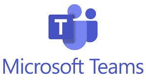
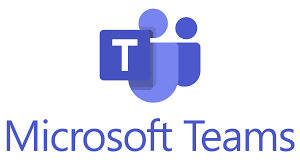

Tools
At the commencement of this assignment we were all only just becoming familiar with GitHub. We had all successfully learned enough to launch our own websites for Assignment 1. Now we were thrust into the position of collaborating together on a team website.
We assigned an initial role of web developer to Anthony, who set about building the basic structure of the website. In the first week we practiced pushing our own content to this site so that we could experience the collaborative process. We immediately encountered problems with conflicts when pulling and pushing. This was alarming and gave us doubts as to how well the process would work. We had serious worries that we could potentially destroy or overwrite other’s work. We put an immediate halt on GitHub submissions while we performed troubleshooting, and realised the conflicts were a result of work performed that was not immediately pushed. In the interim another collaborator had pushed work and so there were now synchronisation issues.
We agreed on a new process, of always pulling before beginning work, and posting in a specific MS Teams chat once a push had been made, to alert the group of new content and remind of the need to pull.
This workflow proceeded smoothly for two weeks, but as more of us started to work on the website we realised there was more potential for conflict. With our current system, if two people were working concurrently on the same section of the website, then we could run into the same problems as before. We devised a new workflow where a chat announcement would be made whenever someone was working on the site, informing other members of which section. It was also agreed that no more than 30 minutes of work should be performed before pushing to the site, with an accompanying push announcement to MS Teams.
We had contributions to the site from all team members, and more confident members were active in modifying the website design, CSS and error correction. This took the pressure off any one particular member, and we found that whenever we pulled content to our local device, the group website was steadily coming together with extensive content and a visually appealing presentation.
We were all conscious of labelling our pushes to outline the changes made, and we found we were easily able to decipher the audit trail on GitHub. For peace of mind we also established a routine daily 6pm backup to one local computer as an additional failsafe.
We are keen to investigate the process and benefits of branching for Assignment 3, as we have all grown in confidence using GitHub browser and desktop interfaces, as well as Atom text editor and its associated Git plugin.
We were all relatively new to the MS Teams environment as well, but quickly mastered its utility. We had twice weekly meetings that were very productive in allocating workloads, troubleshooting problems, and pushing for deadlines. In between meetings we had several active chat threads in MS teams, asking questions, giving progress updates and brainstorming ideas. Each meeting was preceded with an agenda and followed by action notes. This meant meetings were efficient and most outcomes were met on or close to deadlines.
Documents were uploaded to MS Teams for review, and where collaboration was required on a single document, multiple members were able to edit and save dynamically.
Overall despite unfamiliarity and a few early problems, our team used the group work tools very effectively to collaborate together on producing this assignment.
Workflow From - 21.9.21
Workflow From - 23.9.21
Workflow From - 27.9.21
Workflow From - 30.9.21
Workflow From - 4.10.21
Workflow From - 7.10.21
Workflow From - 11.10.21
<nu>recruITs Reflection on Group Work
Our group was fortunate to form early and have good direction and leadership under Brad. He was able to source keen personnel who were active on forums and lecture chats. The formation period is tricky because a lot of students are dropping the course around the same time that groups are forming. Many of us found the prospect of finding and joining a group daunting, and completing work collaboratively seemed beyond possibility.
Hindsight shows that the first week could have been organised slightly better. There was an energy hangover from assignment 1. Some people joined the group before others and so inertia varied between team members. This resulted in uneven distribution of early tasks and a slight feeling of in group (early joiners) to out group (later adopters). As the weeks progressed the group came together well, and these perceptions dissipated.
Brad did not let us hesitate and from the first meeting was talking end goals, division of tasks and brainstorming ideas. There was even mention of Assignment 3 in the early stages, and it was still in the far distant future. This forward planning allowed for the group to steadily turn in work and complete tasks without ever feeling like we were behind or would fail to meet deadlines.
Complementing this was our excellent communication through Microsoft Teams and Github. We had twice weekly video conference meetings, averaging 45-60 minutes, constant updates in the Teams chat, and descriptive additions to our GitHub Repository.
With most of us new to Microsoft Teams we can reflect and see that some of our setup was not ideal, and we will improve this going forward. There are too many avenues of chat communication, each with associated files. This leads to difficulty locating information in a particular chat or locating a precise file. Consolidating and streamlining this into fewer sections for the future will aid this.
We were surprised at how easy it was to be friendly and cooperative with strangers across three states and all via video conferencing and instant messaging. We became friends and our video meetings became something to look forward to.
The quality and quantity of work produced by us as a group is proof that we can do more as a group than any of us possibly could as individuals.
We fine-tuned some difficulties with the tools of technology we used. Early on there were some difficulties finding and joining meetings, and we established a routine where the meeting invitation and reminder would be posted in the General Microsoft Teams chat so it was easy to find. We will pursue some added Teams functionality in the future by using the built in Kanban board app to manage processes, delegation and workflow with higher visibility and accountability.
We all agree that this has been the most positive group work experience we can recall. The support offered to all members regardless of confidence was a highlight, and the positive and encouraging atmosphere of all group and individual interactions ensured that everyone was motivated and able to put their best work forward. We look forward to continuing to work together over the next month to produce a compelling Assignment 3.
Lachlan Jensen Reflection on Group Work
At the beginning of Assessment 2 I was a bit daunted by the task of finding a group. I was unsure of how I would go working in a team environment and I was quite stressed due to the size of the assignment, it seemed like a lot of work and I couldn’t imagine completing it in the small time we had. During our first full team meeting we quickly began to divide the required tasks between ourselves based on our skills and interests. Once the group had gotten to know each other and the assignment had been broken down it to smaller sections for everyone to work on, I found that a lot of the worries I initially had were gone.
I think the most successful part of our team was our communication. We were all active on Microsoft Teams and the team GitHub repository and in the situation of any issues arising we were all very quick to notify the rest of the team. Our GitHub log of activity shows how we were all actively pushing to the repository and how we all provided clear descriptions about the changes made.
The aspect that I believe our team could’ve improved on is our organisation during the first week. While we were still productive, if our organisation in some areas was improved early on, it would’ve allowed us to achieve even more as a team.
The most surprising thing about working in a group was how different it was compared to my expectations. I expected it to be very difficult for myself to communicate with strangers but after meeting the team this wasn’t the case.
During my time working as a team I’ve learnt that even if the task at hand seems daunting, if we plan effectively and work together we can tackle much larger workloads than I previously expected.
Nicholas Richards Reflection on Group Work
<nu>recruITs is a very supportive and hard working group with proactive leadership, peer mentoring and open communication. Our forward set internal deadlines were a highlight, allowing work to be completed well before external deadlines. There was excellent sharing of knowledge and skills amongst team members, and I benefited greatly from reading other member's work and having an insight into their passion for IT.
I was surprised at how valuable the peer editing process was. I was worried about conflict when group members gave feedback on other's work, but the supportive environment we had developed in our group ensured that we all seemed to give and receive feedback in a spirit of goodwill.
One challenge was taking an individual idea for an IT Project and making it a group idea. It can be hard to get passionate about someone else's vision or feel inclusion in it. I would like to hear more diverse ideas about where the group could take our IT Project into Assignment 3.
Group work can be very motivating. Each time I saw my teammates complete quality work I was inspired to pitch in and help. There was a strong sense of the communal good in our group, with no one seeking to compete or sabotage.
Bradley Pavey Reflection on Group Work
Our team communicated very well via Microsoft teams with everyone participating in our group meetings twice a week, pushing and pulling to our github repository and communicated throughout the week to let everyone know how they were going.
I believe we need to simplify the way in which we work through Microsoft Teams better. Right now our communication is a little mixed between general, action posts, nurecruits website chat, all in addition to using personal direct messages with a group chat that has all of us in it for Github pushes and pulling, while this does currently work I think that it could be even better. Our group files reflect the same with our files being spread out through different channels and you can often spend 2-5mins looking for where a file is.
Our group was surprisingly very aware of the need to complete the group assignment, which is something I was only expecting coming into my first subject for university.
Everyone in a group has different hours and times in which they can work, thus it is important to set a group deadline that is suitable to everyone’s hours in which they complete their work, while communicating what you are doing no matter what time you are doing it.
Jeremy Baker Reflection on Group Work
From the beginning our team seemed to gel quite nicely with no ego’s evident and while our skill sets and experience varied it all came together in the end. I am not the most outgoing person by nature and if I do not know what I am doing I will keep out the way of those that do. While this might be a sound tactic in the beginning, this assignment has taught me that I need to figure out early on the skills needed for the work and practice them to become a far more useful and contribute far more than what I did in this assignment.
The group dynamics were quite good and I do not remember any real conflicts and the experienced members were very understanding and helpful. I am a bit of a procrastinator; I do not know if this comes from my many years in cooking where the product is produced as close as possible to service as possible and where preparation and planning are essential. I found that having the work done in good time with time to spare reduces stress and produces a far better product. I am enjoying learning about computers and their uses; they really are the defining technology of our time.
Anthony Namroud Reflection on Group Work
Speaking in terms of working in a collaborative fashion, we have achieved very good grounds regarding communication to each other and contacting the right individuals in the lead of delegated roles, we all have played a big part in relative discussion on different methods, guides, priorities, and actions needed to achieve this assignment. There were two issue I feel that could be improved they are, the use of the calendars to each channel to help develop timing of meetings and attendances of teammates, also, using other applications to help delegate roles. The use of ATOM and GitHub version control by our team was beyond my expectation as a representing team member, as we identified the issues of the ‘push and pull’ functions, that were causing many interferences with each-others work towards the repository, in the early stages of the assignment, and the team effectively communicated with each-other on effective ways to eliminate this issue and has worked ever since. Working in a supportive group, both morally, and professionally has shown me that to succeed in our goals in a more cohesive manner, requires us to learn about one another at a friendship level, and to always motivate each-other with ideas, guides, and constant reviews to maximise our skills and experiences gained through this task.
Jacob Brakespeare Reflection on Group Work
When assessment 2 began I was quite unsure of how I would work in this group setting, however I quickly folded into the <nu>recruITs extremely well. The group quickly found its leadership and we as a collective saw ourselves moving directly into action. The first encouraging action we took was to build an internal structure that we could agree on, deciding meeting times was a simple but extremely effective choice, helping us decide when any of our actions and tasks were due and to help create a meeting point during the assignment that we could discuss any pressing issue that had or would arise in the passing weeks, as well as the decision to allocate specific sections in the assignment to specific members and then having our peers review our work before integrating it into our website was a fantastic decision.
I believe my participation in this assignment could have been improved, as I was unfortunately finding myself missing internal deadlines, and not believing my work quality to be of high value.
I found myself (happily) surprised to see the enthusiasm and dedication every single person in this group put forward, in the majority of my past group environments, I would encounter people that refused to participate in group tasks, however every member of this team actively interacted with each other, with no sense of apathy to this assignment or each other.
One important value I learnt is how useful checkpointed group discussions are to group dynamics and how group communication can be used to address immediate issues when needed
 
